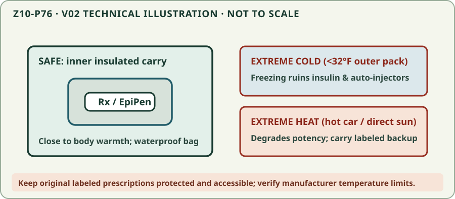

Z10-P76 · Wilderness medicine · New manuscript
Protect personal prescription medications from cold, heat, and loss
Keep life-sustaining personal prescriptions (epinephrine, insulin, inhalers, heart/seizure meds) potent and accessible in harsh environments.
When it applies · Any traveler or household member relying on daily or emergency prescription medications outdoors or during outages.
Equipment · Original labeled prescription containers, insulated inner-pocket pouch (for cold/heat), written medication/dose/allergy card, and spare supply.

Actions
- Carry essential personal medications in their original pharmacy-labeled containers (plus an extra multi-day reserve split across a companion's pack if appropriate) so EMS clinicians can verify exact drug names and strengths instantly.[T10, M20]
- Protect temperature-sensitive prescriptions—epinephrine auto-injectors, insulin, and pressurized asthma inhalers lose potency or malfunction if frozen in winter packs or baked inside parked summer cars; carry them in insulated inner layers close to body warmth in winter or shaded cool pouches in heat.[T10, E02, X07]
- Keep a waterproof written list of all medications, dosages, prescribing clinics, and allergies inside your wallet and first-aid kit so rescuers have accurate records even if you become unresponsive.[T10, T11, M20]
Failure recognition · Stashing an epinephrine auto-injector or insulin pen in an outer backpack pocket at minus 10°F where the liquid freezes solid before an emergency strikes.[T10, E02]
Verify · Confirm original pharmacy labels, spare backup days, temperature-buffer storage, and written medication/allergy list are packed.[T10, M20]
Stop or change course · Frozen, cloudy/discolored (check drug label), damaged, or expired emergency medications must be replaced before relying on them in remote areas.[T10, M20]
Evidence and editorial notes
- E02 · NPS · Ten Essentials (current web edition)
- Section: Navigation; insulation; emergency shelter; emergency food and water · Conditions: Outdoor trips; adjust kit to season and route
Support: Carry essential systems including navigation, insulation, light, water and emergency shelter.
Limitations: Carrying items without practice or cold-weather verification does not ensure readiness. · Conflicting evidence: None; baseline kit system architecture.
Editorial note: Supports failure-mode packing and kit verification cards. · Specialist reviewer: Field education and search and rescue
Primary source · checked 2026-11-24 - M20 · NIH / MedlinePlus · First Aid Overview (current web edition)
- Section: Lay First-Aid Scope, Kit Readiness, and Documentation · Conditions: Pre-trip kit preparation and remote patient monitoring
Support: Maintain an inspected, unexpired first-aid kit matched to your actual training, keep written patient observations (time, responsiveness, breathing, symptoms, interventions) for EMS handoff, and practice skills in certified courses.
Limitations: Carrying advanced medical instruments without clinical training adds risk rather than capability. · Conflicting evidence: None; aligns with ARC and NPS-K.
Editorial note: Anchors kit sizing, SOAP-style lay observation logs, and scope-of-practice cards. · Specialist reviewer: Wilderness EMS and clinical education
Primary source · checked 2026-11-24 - T10 · FEMA / Ready.gov · People with Disabilities (current web edition)
- Section: People with Disabilities > Make a Plan and Build a Kit · Conditions: Individuals with mobility, sensory, medical, or power-dependent access and functional needs
Support: Build a personal support network, plan accessible evacuation transport, register voluntarily with local emergency registries where available, and plan backup power and spare supplies for medical devices, medications, and service animals.
Limitations: Local registry availability and utility priority-restoration policies vary by jurisdiction. · Conflicting evidence: None; extends generic preparedness plans to accessible requirements.
Editorial note: Directly addresses Z01 accessible emergency planning requirement. · Specialist reviewer: Accessible emergency management and disability preparedness
Primary source · checked 2026-11-24 - T11 · FEMA / Ready.gov · Make a Plan (current web edition)
- Section: Make a Plan > Family Emergency Communication Plan · Conditions: Households and traveling groups preparing for disruptions
Support: Record out-of-area contacts, local meeting places, medical/allergy summaries, and alternate communication channels (text vs voice) in paper and offline formats; practice the plan periodically.
Limitations: Cellular networks often congest during disasters while SMS or out-of-area contacts may still connect. · Conflicting evidence: None; complements outdoor trip-plan cards.
Editorial note: Anchors emergency communication protocols and group contingency plans. · Specialist reviewer: Emergency management and communications
Primary source · checked 2026-11-24 - X07 · NPS · Death Valley Safety (Desert Travel and Heat) (current web edition)
- Section: Death Valley Safety > Desert Heat, Dehydration, Flash Floods and Vehicle Breakdown · Conditions: Arid desert travel, canyon country and extreme summer heat
Support: Desert heat accelerates fluid and electrolyte loss rapidly, temperatures inside parked vehicles spike to fatal levels within minutes, dry washes flash-flood from distant storms and staying with a disabled road vehicle is generally safer than walking into extreme heat.
Limitations: Cell service is widely absent across desert basins; water needs can exceed 1 gallon/day dramatically during heat. · Conflicting evidence: None; aligns with CDC-HEAT and NWS-HEAT.
Editorial note: Core desert-environment evidence across Z12 heat/arid cards. · Specialist reviewer: Desert safety and emergency medicine
Primary source · checked 2026-11-24
Source lineage · FEMA Access Needs and NIH MedlinePlus First Aid; new manuscript · Classification · New manuscript.